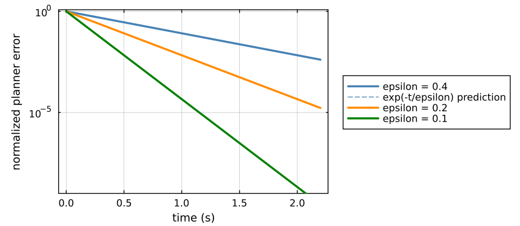

Boundary-Layer Stability and ISS
Define planner error $e=x-q^\star$. Differentiating and substituting the normalized filter gives
\[\epsilon\dot e=-e-\epsilon\dot q^\star.\]
This one equation contains both parts of the paper's claim: exponential convergence when the manifold is fixed and an $O(\epsilon)$ tracking tube when target motion carries it through state space.
Stationary reference
For stationary targets, $\dot q^\star=0$ and
\[\epsilon\dot e=-e.\]
With $V(e)=\tfrac12\lVert e\rVert^2$, its derivative is
\[\dot V=-\frac1\epsilon\lVert e\rVert^2 =-\frac{2}{\epsilon}V.\]
For every fixed harmonic reference and every $\epsilon>0$, the equilibrium $x=q^\star$ is globally exponentially stable:
\[\lVert e(t)\rVert=e^{-t/\epsilon}\lVert e(0)\rVert.\]
The bound is uniform in the sheaf topology because $H$ has already been absorbed into the solved reference. The boundary-layer rate is $1/\epsilon$, not $\lambda_{\min}(H)/\epsilon$.

The fitted rates are $2.5$, $5.0$, and $10.0$ for $\epsilon=0.4$, $0.2$, and $0.1$ respectively. These are direct checks of the dissipation identity, not merely endpoint convergence.
Moving-reference ISS bound
Variation of constants gives
\[e(t)=e^{-t/\epsilon}e(0) -\int_0^t e^{-(t-s)/\epsilon}\dot q^\star(s)\,ds.\]
Taking norms yields
\[\boxed{ \lVert e(t)\rVert\le e^{-t/\epsilon}\lVert e(0)\rVert+ \epsilon\sup_{0\le s\le t}\lVert\dot q^\star(s)\rVert.}\]
The first term is the boundary-layer transient. The second is the asymptotic gain from target-induced reference velocity. Thus the planner is ISS with respect to $\dot q^\star$ and its uncompensated lag is first order in $\epsilon$.
This bound gives $\epsilon$ a physical interpretation. If the harmonic reference can move at most at speed $v_{max}$ and planner error must stay below $r$ after the transient, choose $\epsilon\le r/v_{max}$. The exact sampled update removes numerical stiffness, but it does not remove this continuous-time bandwidth tradeoff.
Tikhonov limit
On the fast time $\tau=t/\epsilon$, freeze $t$ and define $y=x-q^\star(t)$. The boundary layer is
\[\frac{dy}{d\tau}=-y,\]
which is globally exponentially stable uniformly in the frozen target state. If the reduced slow target/coordination dynamics satisfy the regularity and stability hypotheses of Tikhonov's theorem, then away from the initial layer
\[x(t)=q^\star(t)+O(\epsilon).\]
The theorem concerns the continuous system. It should not be confused with taking $\epsilon=0$ in software. TikhonovFilter requires a positive value; the algebraic direct-planner mode represents the exact zero limit.
From one agent to the fleet
Suppose local agent $i$ has tracking error $z_i$ and an ISS-Lyapunov function $V_i$ with respect to its delivered reference. Since local states are disjoint, define
\[V_{\mathrm{loc}}(z)=\sum_{i=1}^N V_i(z_i).\]
Directional differentiation is linear:
\[\dot V_{\mathrm{loc}}= \sum_{i=1}^N\dot V_i.\]
Summing the individual dissipation inequalities preserves positive definiteness and produces an ISS bound for the direct sum. Connecting that aggregate below the ISS planner forms the unidirectional cascade
\[p(t)\longrightarrow q^\star(t)\longrightarrow x(t) \longrightarrow(z_1,\ldots,z_N).\]
By the ISS cascade theorem, the complete system is ISS with respect to target motion and other admitted disturbances. When targets are stationary, the input vanishes; planner and local tracking errors converge to zero, giving the stationary-target GAS corollary.